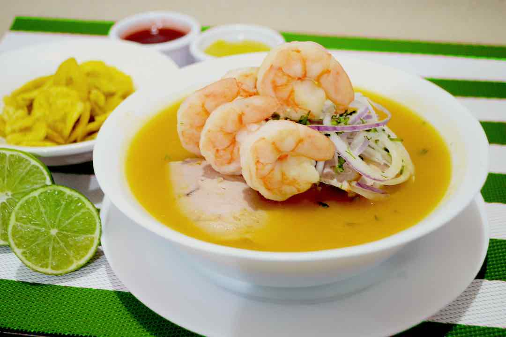

¿Quienes somos?Hola, somos Vicente Mendieta y Oliver Montalván, 2 estudiantes de la unidad educativa Tecnico Saleciano, los cuales estudiamos informatica, nuestra mayor experiencia en el ambito de la materia seria la del uso del java y netbeans |
|
|  |
Propositos de la pagina:Nosotros Hemos creado esta pagina basada tanto en las comidas tipicas del pais, como las internacionales con el propsito de dar a conocer la gran variedad de comida que puede llegar a existir en el Ecuador, y en el resto de lugares del mundo, apto para que la gente pueda salir de su zona de confort y pueda probar diferente comida |